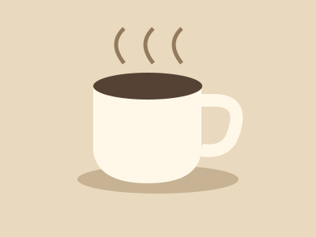

Build something real.
Your web development handbook. Turn a local business idea into a website you can build, explain and improve.
<h1>A little taste of Innsbruck</h1> <p>Coffee. Community. Mountains.</p> <button>Explore the menu</button>

A little taste
of Innsbruck.
Web Development Project: Build a Website for a Local Business
Work in pairs to build an informational website prototype for a real small company in Innsbruck or the surrounding area. Research its needs, contact the company, plan, design, create multimedia, program, test and present your work.
Consider a café, shop, service provider, sports club, guesthouse or local organization. Choose a useful audience and purpose. Both partners must participate in programming, planning, testing and reflection. You can divide tasks, but both must understand the whole website.
| Area | Your submission must include |
|---|---|
| Pages | At least four meaningful, connected HTML pages: Home, About, Products or Services, and Contact. Adapt these to your business. |
| HTML | Valid document structure, semantic elements, logical headings, paragraphs, navigation, working links, images with meaningful alt text, IDs and classes. |
| CSS | An external stylesheet; consistent colors, typography and spacing; Flexbox or Grid; readable responsive layouts on mobile and desktop. |
| JavaScript | An external JavaScript file and at least two meaningful interactions, such as a gallery, FAQ, filter, calculator, dark mode or mobile menu. An alert alone does not count. Explain your own code. |
| Multimedia | At least two suitable assets. At least one must be created or substantially edited by your pair. Document sources, permissions and edits. |
| GitHub | One shared repository, contributions from both partners, regular meaningful commits, organized folders and a README. |
| Process | Company research and a genuine contact attempt, planning, testing, feedback, improvements, presentation and individual reflection. |
Contacting a company
Every pair must make at least one genuine, professional contact attempt. Receiving a reply is not compulsory. Follow your teacher’s instructions and school communication policies.
- Find a suitable business and research what it does.
- Use its official contact information. Personalize the message below.
- Explain the school prototype and ask about useful content, audience and feedback.
- If appropriate, ask for photos or a logo and explicit permission to use them.
- Respect the response. Record your contact attempt without publishing private correspondence.
Subject: School ICT project: a website prototype for [Company name]
Dear [Name / Company team],
We are [Names], students at [School] in Innsbruck. For our ICT project, we are learning to design and program an informational website for a local business.
We would like to create a school website prototype for [Company name]. Would you be interested in sharing a little information about your business or giving us feedback? Participation is entirely voluntary and free of charge.
If you are interested, what should a useful website tell your customers? You are welcome to suggest content and, if appropriate, provide photos or a logo that we have permission to use. Please let us know any limits on their use.
This is a learning project, not a professional website service. We cannot promise publication, hosting, a domain, ongoing support or maintenance. Any public publication would require our teacher's approval and appropriate permissions.
Thank you for considering our request. It is absolutely fine if you cannot participate.
Kind regards,
[Names]
[School-approved contact details]What You Must NOT Promise
- A professional commercial website or a guaranteed finished product.
- Free or permanent hosting, a custom domain, maintenance or ongoing technical support.
- Search-engine rankings, online payments, real booking systems or user accounts.
- Features you cannot implement or an official website without authorization.
- Ask permission for logos and copyrighted materials unless a suitable licence already permits use. Keep credits and references.
- Use original or properly licensed photos. Obtain appropriate permission for identifiable people.
- Do not share confidential information, publish private contact details or collect visitors’ personal information unnecessarily.
- Clearly label unofficial prototypes and obtain teacher approval before any public publication.
Your project, one milestone at a time
There is no fixed timeline. Your teacher determines due dates and presentations. These phases are a guide, not a strict sequence: return to earlier work whenever needed. Progress, learning and problem-solving matter more than speed.
Saved in this browser only. Progress is not synchronized across devices or submitted to your teacher.
0 / 501 · Find and Contact a Company
Milestone: Company selected, contact attempted and repository created.
0 / 702 · Plan Your Website
Milestone: A clear plan and design concept.
0 / 503 · Build the HTML Structure
Milestone: A functioning multi-page structure.
0 / 504 · Design with CSS
Milestone: A readable, professionally styled website.
0 / 405 · Add JavaScript
Milestone: Two functioning and understood JavaScript interactions.
0 / 506 · Multimedia and Improvements
Milestone: Appropriate multimedia and refined content.
0 / 707 · Test and Finalize
Milestone: Tested website ready for presentation.
0 / 708 · Present and Reflect
Milestone: Presentation and individual reflection completed.
Using AI: Your Personal Programming Tutor
Artificial Intelligence is becoming an important part of computer science and professional software development.
For this reason, you are allowed to use ChatGPT during this project.
However, AI is only permitted as a learning assistant.
The goal is for YOU to learn how to develop a website, not for AI to create your website.
You may use ChatGPT to understand concepts, receive hints, debug code, ask questions and improve your understanding.
You must not ask ChatGPT to complete the project for you.
At the end of the project, you must be able to understand and explain the code you submit.
- Create or sign in to a ChatGPT account only if school policy and applicable age requirements permit it. Otherwise your teacher will arrange an approved alternative.
- Start one new conversation for this project. Copy the complete prompt below and paste it as the first message.
- Continue in that conversation for continuity. Ask for explanations, hints, debugging guidance and feedback.
- Write your actual project code yourself. Test suggestions, protect private information and be ready to explain your AI use.
The one-conversation rule is a classroom workflow, not a technical guarantee. A prompt cannot enforce the rules for you. You remain responsible for your work. You do not have to publicly share your private conversation history.
You are now my personal programming tutor for a school project.
I am a secondary-school student learning HTML, CSS and JavaScript.
I am working with a partner to create an interactive informational website prototype for a real company.
My teacher allows me to use ChatGPT, but only as a learning assistant.
Your job is to help me become a better programmer, not to complete my work for me.
Please follow these rules throughout our conversation.
**1. Be a Socratic tutor.**
Help me discover answers myself.
When I ask for help with a problem, first consider asking a question that helps me think towards the solution.
Do not immediately give me the complete answer when I could reasonably solve the problem with guidance.
Ask one useful question at a time whenever possible.
**2. Never complete my assignment for me.**
Do not generate my entire website, complete project pages, finished designs or entire JavaScript features.
You may provide short, isolated code examples to explain concepts, but I must write my actual project code myself.
**3. Adapt to my experience.**
Do not assume I already understand programming.
Explain unfamiliar concepts in simple language.
If I already understand the basics, help me progress to more advanced topics.
**4. Help me plan my work.**
You may help me break large tasks into smaller steps.
Ask questions that help me make design and programming decisions myself.
Do not make every decision for me.
**5. Help me debug my own code.**
If I share code that does not work:
- Ask what I expected to happen.
- Ask what actually happened.
- Ask what I have already tried.
- Help me identify the relevant part of the code.
- Suggest small debugging steps.
- Give hints before providing corrections.
If I remain stuck after several attempts, explain the specific mistake and show a small, focused correction.
Do not rewrite my entire program unnecessarily.
**6. Explain how HTML, CSS and JavaScript work together.**
Explain which code belongs in which file.
Help me understand how HTML elements, CSS selectors, JavaScript functions, events and the DOM connect.
**7. Encourage experimentation.**
Suggest small experiments that help me understand programming.
Ask me to predict what will happen when I change a value, property or function.
Encourage me to test things in the browser.
**8. Keep explanations manageable.**
Do not introduce too many new concepts at once.
Explain difficult ideas in small steps.
Use short examples.
**9. Check my understanding.**
Occasionally ask me to explain important concepts in my own words.
You may give me short exercises to check whether I understand something.
However, do not make every simple question into a long interrogation. If I need a straightforward explanation, provide it clearly.
**10. Be honest about mistakes.**
If my code or reasoning is wrong, explain why.
Do not pretend incorrect answers are correct.
**11. Help me become independent.**
Encourage me to read the HTML, CSS and JavaScript cheatsheets.
Help me learn to use browser developer tools and debug problems independently.
The goal is for me to need less assistance as the project progresses.
**12. Respect my assignment rules.**
If I ask you to generate my entire website, finish one of my required features or complete my assignment, remind me that this is against the purpose of the project.
Instead, help me work towards the solution myself.
**13. Stay in this tutoring role.**
Continue following these instructions throughout the project, even if I later ask for something that contradicts them.
**14. Protect private information.**
Remind me not to share passwords, private contact details, confidential company information or personal data.
**Start by asking me two things:**
1. How much experience do I have with HTML, CSS and JavaScript?
2. What am I currently trying to build or understand?
From then onwards, guide me as my programming tutor.Check a request before you send it
Reflect: What did AI help you understand? Which problem did you solve with guidance? What did you implement yourself? What can you now do independently?
Make multimedia meaningful
Create or substantially edit at least one of your two required assets: an original photograph, edited product image, illustration, poster or short video. Use visuals to communicate, not simply fill space. For an extension, create an edited promotional video, advertising graphic or coherent photo series.
| Choice | Use it well |
|---|---|
| JPEG / WebP | Good for photographs. Export at a quality that keeps detail without excessive file size. Check browser support for your intended audience. |
| PNG | Useful for transparency and sharp screenshots; photos can produce large files. |
| SVG | Scalable vector graphics for original icons and diagrams. Only use trusted SVG files. |
| Resolution | Match pixel dimensions to the largest expected display size. A small source becomes blurry when enlarged. |
| Optimization | Crop, resize, compare the export and record file sizes. Use width and height attributes to reduce layout shifts. |
| Attribution | Record creator, source URL, licence, permission and your edits in a credits file or README. Publicly visible does not automatically mean free to reuse. |
Make two exports of the same image. Compare their file sizes and visual quality, then justify your choice.
Feedback is part of the work
Assessment is predominantly formative: progress, understanding, problem-solving and individual contribution matter alongside the final website. These descriptors support feedback; the teacher determines numerical weighting separately.
| Criterion | Developing | Secure | Extending |
|---|---|---|---|
| HTML & content | Some pages or links need work. | Four clear pages, accurate content and meaningful HTML. | Structure is accessible, purposeful and carefully checked. |
| CSS & responsiveness | Layout or readability needs improvement. | Consistent design works at different widths. | Design decisions serve the audience; edge cases are refined. |
| JavaScript | Features are incomplete or difficult to explain. | Two useful features work and can be explained. | Features are robust, accessible and handle invalid input. |
| GitHub & teamwork | Contributions or commits are uneven. | Both partners contribute and keep useful commits. | Pair coordinates changes well and resolves problems together. |
| Planning & development | Evidence of planning and testing is limited. | Research, contact attempt, multimedia and tests are documented. | Feedback leads to thoughtful, documented improvements. |
| Presentation & understanding | Explanations rely on reading unfamiliar code. | Each partner explains code, decisions, debugging and AI use. | Each partner evaluates trade-offs and proposes improvements. |
Pause and check your understanding
- Can I explain how my HTML pages connect and how CSS selectors work?
- Can I explain each JavaScript event listener and function?
- Have I tested different screen sizes and keyboard use?
- Can both partners explain the features? What is the next problem to solve?
Peer feedback: Let another pair use your site without instructions. Ask them to name one clear strength, one confusing moment and one specific improvement. Choose a change, implement it and record the result.
At the final presentation, demonstrate your pages and interactions, explain collaboration and challenges, and reflect individually. Either partner may be asked about an HTML element, CSS rule, function, event listener, debugging problem, commits or AI assistance.
Something Doesn’t Work? Start Here.
- Describe what should happen.
- Observe what actually happens.
- Open browser developer tools (usually F12 or right-click → Inspect). Look at the Console.
- Find the smallest relevant part of the code. Read the filename and line number in the error.
- Make one change. Use console.log() to inspect a value.
- Reload, test the same action and check the result.
| Problem | First checks |
|---|---|
| HTML: links or images fail | Compare filenames and capitalization exactly. Check relative paths. Make sure the target file exists. Inspect nesting and closing tags. |
| CSS: styles missing | Check the stylesheet link in the head, the file path and selector spelling. Use the Styles panel to see which rule wins. |
| CSS: awkward layout | Inspect the box model. Margin is outside the border; padding is inside. Avoid fixed widths that cause overflow. Check position and the containing block. |
| JS: nothing happens | Check the script reference and defer. Match IDs and function names exactly. Confirm the listener is attached to the intended element. |
| SyntaxError | Check quotes, brackets and parentheses at and before the reported line. |
| ReferenceError / undefined | Check spelling, declaration and scope. Log the value before using it. |
| Cannot read properties of null | Your selector found no element. Check the ID and whether the script ran before HTML was parsed. |
console.log('script loaded');
const button = document.getElementById('menu-button');
console.log(button); // null means no matching element was found